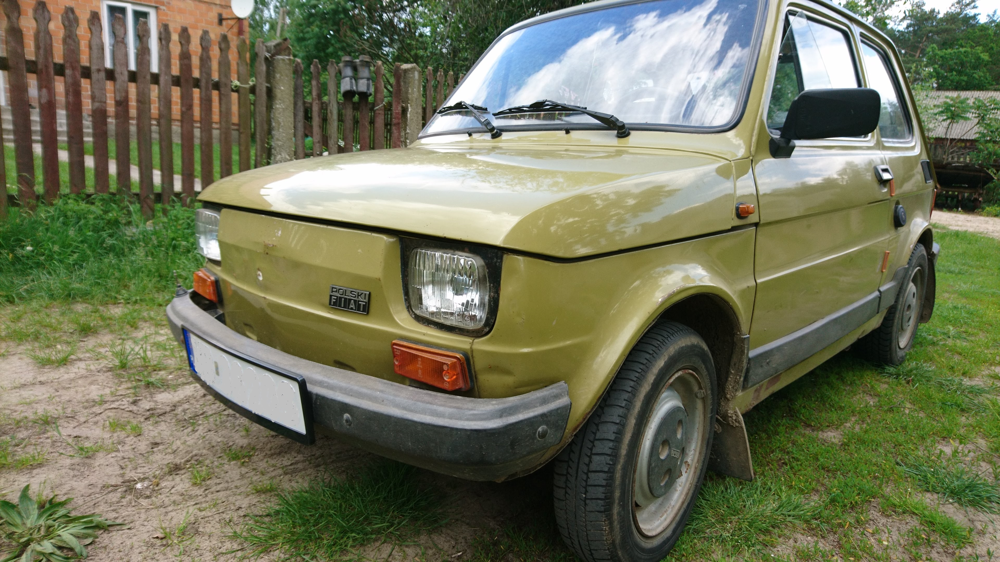

Kilka słów o historii Fiata 126p

Fiat 126p -jest samochodem zaprojekowtawnym przez włoskiego producenta samochodów "Fiat". Był on produkowany w latach 1972-2000. W Polsce samochód produkowany był przez polską Fabrykę Samochodów Małolitrażowych (od 1992 część koncernu Fiat jako Fiat Auto Poland) na licencji włoskiego Fiata 126. W Polsce samochód produkowany był od 6 czerwca 1973 do 22 września 2000 roku. Samochód napędzany był początkowo silnikiem o pojemności skokowej 594 cm³ i mocy 23 KM, a od 1977 652 cm³ i 24 KM. Fiatów 126 zostało wyprodukowanych łącznie 4 671 586 sztuk z czego 3 318 674 w Polsce (1 152 325 w Bielsku-Białej, 2 166 349 w Tychach)
Jeśli masz ochotę to poczytaj o histrii Fiata 126p (otwiera się w nowej karcie)
Mój Fiat 126p- Kazik

Swojego fiata 126p otrzymałem od swojego Dziadka. Pochodzi on z roku 1986 i jest on w kolorze zielonym. Został wyprodukowany w Bielsku- Białej. Napędza go silnik o pojemności 652 cm³ i zawrotnej mocy 24 KM. Samochód do demonów prędkości nie należy, za to daje dużo innych fajnych wrażeń z jazdy. Fiata 126p powoli można zaliczyć do grona Youngtimer-ów.
Ulubionych samochodów z poprzedniej epoki
| Samochód | Model | Lata produkcji |
| FSO | Polonez | 1978-2002 |
| Fiat | 126p | 1967-1991 |
| Fiat | 125p | 1967-1973 |
| Wołga | GAZ 24 | 1967-1985 |